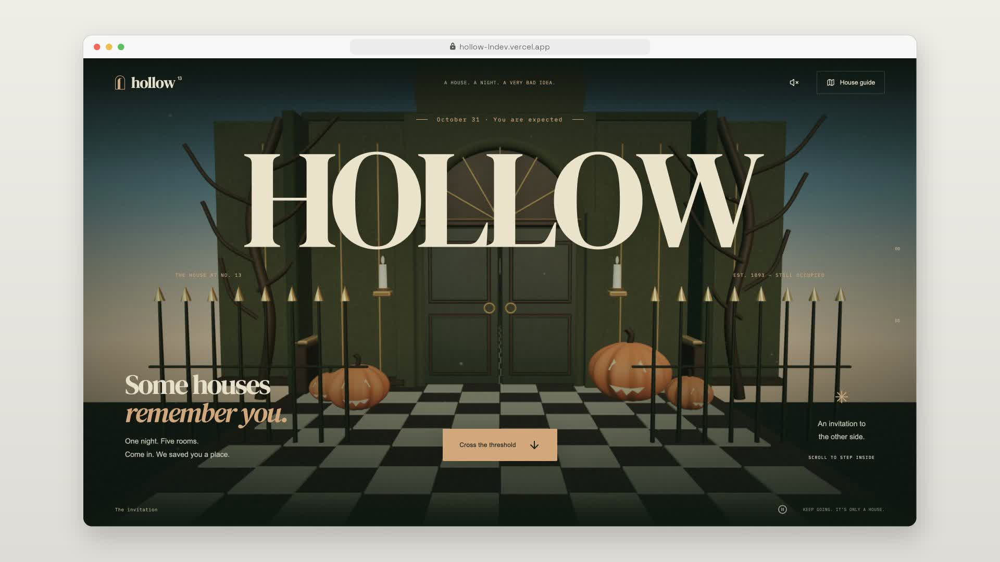

A SMALL COLLECTION. A BIG RANGE.
Different
by design.
Open-source landing pages with a personality of their own.
Built with Next.js and fully customized shadcn/ui.
Ready to make your own.

AN IMMERSIVE HALLOWEEN STORYHollow

Built from scratch. Made to be taken apart.
An ongoing experiment by LNOriginal art directions. Custom shadcn/ui. Full source code. Room to make it yours.
01 / THE COLLECTION
Pick your personality.
From a quiet coastal escape
to a world that grows as you
scroll.
16 projects
Explore the live previews. Make the source code your own.
02 / ONE FOUNDATION. NO UNIFORM.
The components
are familiar.
The feeling isn’t.
Same shadcn/ui foundations. Entirely different worlds. Typography, materials, motion and tiny details give every project its own point of view.
These are fictional brands, built as working design studies. Explore them, read the code, borrow an idea. Then take it somewhere new.
Get under the hood-
01
A complete direction.
One idea carried through the page, the interactions and the smallest details.
-
02
Made to be explored.
Interactive demos, responsive layouts and motion that knows when to slow down.
-
03
Yours to build on.
Standalone projects, customized components and source code under MIT.
03 / TAKE IT FROM HERE
Make yourself
at home.
Choose a project. Run it locally.
Make it unmistakably yours.
# Get the collection
git clone https://github.com/ln-dev7/landing-pages.git
cd landing-pages
# Pick a world
cd landing-pages/fallow
pnpm install
pnpm dev